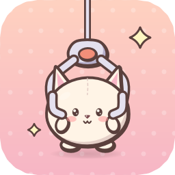
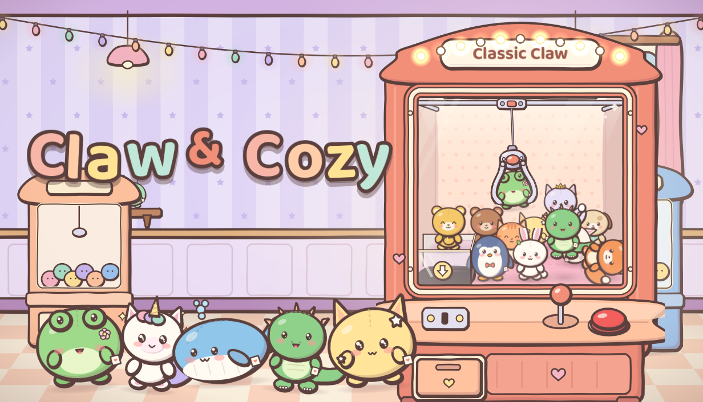

iPhone · iPad · Android · Steam
Claw & Cozy
Win adorable plush friends in a cozy little claw machine arcade. Tap a plush, press Drop, and watch real physics decide the catch.

- 49 original hand-drawn plushies in 8 collections
- 7 machines that each play differently
- Upgrade your claws, decorate your arcade, meet the regulars
- No timers, no ads, no in-app purchases — plays fully offline
Türkçe
Sıcacık bir kıskaç makinesi salonunda sevimli pelüş arkadaşlar kazan. Bir pelüşe dokun, Bırak'a bas ve yakalamayı gerçek fiziğin belirlemesini izle. Reklam yok, uygulama içi satın alma yok, tamamen çevrimdışı.
Privacy Policy / Gizlilik · Terms of Use / Kullanım Koşulları · Support / Destek